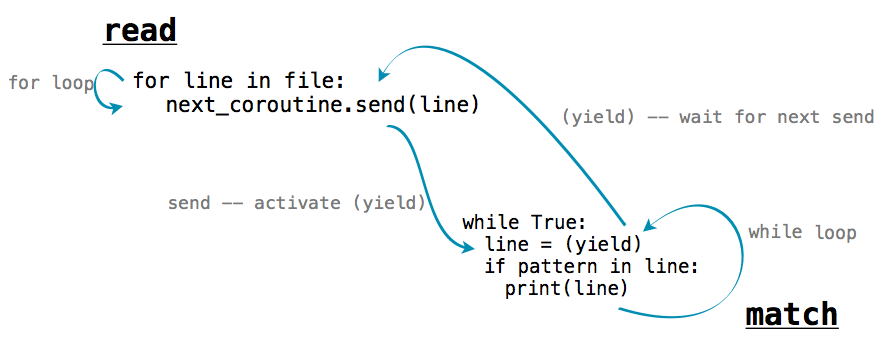

第五章 序列和协程
5.1 引言
在这一章中，我们通过开发新的工具来处理有序数据，继续讨论真实世界中的应用。在第二章中，我们介绍了序列接口，在 Python 内置的数据类型例如tuple和list中实现。序列支持两个操作：获取长度和由下标访问元素。第三章中，我们开发了序列接口的用户定义实现，用于表示递归列表的Rlist类。序列类型具有高效的表现力，并且可以让我们高效访问大量有序数据集。
但是，使用序列抽象表示有序数据有两个重要限制。第一个是长度为n的序列的要占据比例为n的内存总数。于是，序列越长，表示它所占的内存空间就越大。
第二个限制是，序列只能表示已知且长度有限的数据集。许多我们想要表示的有序集合并没有定义好的长度，甚至有些是无限的。两个无限序列的数学示例是正整数和斐波那契数。无限长度的有序数据集也出现在其它计算领域，例如，所有推特状态的序列每秒都在增长，所以并没有固定的长度。与之类似，经过基站发送出的电话呼叫序列，由计算机用户发出的鼠标动作序列，以及飞机上的传感器产生的加速度测量值序列，都在世界演化过程中无限扩展。
在这一章中，我们介绍了新的构造方式用于处理有序数据，它为容纳未知或无限长度的集合而设计，但仅仅使用有限的内存。我们也会讨论这些工具如何用于一种叫做协程的程序结构，来创建高效、模块化的数据处理流水线。
5.2 隐式序列
序列可以使用一种程序结构来表示，它不将每个元素显式储存在内存中，这是高效处理有序数据的核心概念。为了将这个概念用于实践，我们需要构造对象来提供序列中所有元素的访问，但是不要事先把所有元素计算出来并储存。
这个概念的一个简单示例就是第二章出现的range序列类型。range表示连续有界的整数序列。但是，它的每个元素并不显式在内存中表示，当元素从range中获取时，才被计算出来。所以，我们可以表示非常大的整数范围。只有范围的结束位置才被储存为range对象的一部分，元素都被凭空计算出来。
>>> r = range(10000, 1000000000)
>>> r[45006230]
45016230
这个例子中，当构造范围示例时，并不是这个范围内的所有 999,990,000 个整数都被储存。反之，范围对象将第一个元素 10,000 与下标相加 45,006,230 来产生第 45,016,230 个元素。计算所求的元素值并不从现有的表示中获取，这是惰性计算的一个例子。计算机科学将惰性作为一种重要的计算工具加以赞扬。
迭代器是提供底层有序数据集的有序访问的对象。迭代器在许多编程语言中都是内建对象，包括 Python。迭代器抽象拥有两个组成部分：一种获取底层元素序列的下一个元素的机制，以及一种标识元素序列已经到达末尾，没有更多剩余元素的机制。在带有内建对象系统的编程语言中，这个抽象通常相当于可以由类实现的特定接口。Python 的迭代器接口会在下一节中描述。
迭代器的实用性来源于一个事实，底层数据序列并不能显式在内存中表达。迭代器提供了一种机制，可以依次计算序列中的每个值，但是所有元素不需要连续储存。反之，当下个元素从迭代器获取的时候，这个元素会按照请求计算，而不是从现有的内存来源中获取。
范围可以惰性计算序列中的元素，因为序列的表示是统一的，并且任何元素都可以轻易从范围的起始和结束位置计算出来。迭代器支持更广泛的底层有序数据集的惰性生成，因为它们不需要提供底层序列任意元素的访问途径。反之，它们仅仅需要按照顺序，在每次其它元素被请求的时候，计算出序列的下一个元素。虽然不像序列可访问任意元素那样灵活（叫做随机访问），有序数据序列的顺序访问对于数据处理应用来说已经足够了。
5.2.1 Python 迭代器
Python 迭代器接口包含两个消息。__next__消息向迭代器获取所表示的底层序列的下一个元素。为了对__next__方法调用做出回应，迭代器可以执行任何计算来获取或计算底层数据序列的下一个元素。__next__的调用让迭代器产生变化：它们向前移动迭代器的位置。所以多次调用__next__会有序返回底层序列的元素。在__next__的调用过程中，Python 通过StopIteration异常，来表示底层数据序列已经到达末尾。
下面的Letters类迭代了从a到d字母的底层序列。成员变量current储存了序列中的当前字母。__next__方法返回这个字母，并且使用它来计算current的新值。
>>> class Letters(object):
def __init__(self):
self.current = 'a'
def __next__(self):
if self.current > 'd':
raise StopIteration
result = self.current
self.current = chr(ord(result)+1)
return result
def __iter__(self):
return self
__iter__消息是 Python 迭代器所需的第二个消息。它只是简单返回迭代器，它对于提供迭代器和序列的通用接口很有用，在下一节会描述。
使用这个类，我们就可以访问序列中的字母：
>>> letters = Letters()
>>> letters.__next__()
'a'
>>> letters.__next__()
'b'
>>> letters.__next__()
'c'
>>> letters.__next__()
'd'
>>> letters.__next__()
Traceback (most recent call last):
File "<stdin>", line 1, in <module>
File "<stdin>", line 12, in next
StopIteration
Letters示例只能迭代一次。一旦__next__()方法产生了StopIteration异常，它就从此之后一直这样了。除非创建新的实例，否则没有办法来重置它。
迭代器也允许我们表示无限序列，通过实现永远不会产生StopIteration异常的__next__方法。例如，下面展示的Positives类迭代了正整数的无限序列：
>>> class Positives(object):
def __init__(self):
self.current = 0;
def __next__(self):
result = self.current
self.current += 1
return result
def __iter__(self):
return self
5.2.2 for语句
Python 中，序列可以通过实现__iter__消息用于迭代。如果一个对象表示有序数据，它可以在for语句中用作可迭代对象，通过回应__iter__消息来返回迭代器。这个迭代器应拥有__next__()方法，依次返回序列中的每个元素，最后到达序列末尾时产生StopIteration异常。
>>> counts = [1, 2, 3]
>>> for item in counts:
print(item)
1
2
3
在上面的实例中，counts列表返回了迭代器，作为__iter__()方法调用的回应。for语句之后反复调用迭代器的__next__()方法，并且每次都将返回值赋给item。这个过程一直持续，直到迭代器产生了StopIteration异常，这时for语句就终止了。
使用我们关于迭代器的知识，我们可以拿while、赋值和try语句实现for语句的求值规则：
>>> i = counts.__iter__()
>>> try:
while True:
item = i.__next__()
print(item)
except StopIteration:
pass
1
2
3
在上面，调用counts的__iter__方法所返回的迭代器绑定到了名称i上面，便于依次获取每个元素。StopIteration异常的处理子句不做任何事情，但是这个异常的处理提供了退出while循环的控制机制。
5.2.3 生成器和yield语句
上面的Letters和Positives对象需要我们引入一种新的字段，self.current，来跟踪序列的处理过程。在上面所示的简单序列中，这可以轻易实现。但对于复杂序列，__next__()很难在计算中节省空间。生成器允许我们通过利用 Python 解释器的特性定义更复杂的迭代。
生成器是由一类特殊函数，叫做生成器函数返回的迭代器。生成器函数不同于普通的函数，因为它不在函数体中包含return语句，而是使用yield语句来返回序列中的元素。
生成器不使用任何对象属性来跟踪序列的处理过程。它们控制生成器函数的执行，每次__next__方法调用时，它们执行到下一个yield语句。Letters迭代可以使用生成器函数实现得更加简洁。
>>> def letters_generator():
current = 'a'
while current <= 'd':
yield current
current = chr(ord(current)+1)
>>> for letter in letters_generator():
print(letter)
a
b
c
d
即使我们永不显式定义__iter__()或__next__()方法，Python 会理解当我们使用yield语句时，我们打算定义生成器函数。调用时，生成器函数并不返回特定的产出值，而是返回一个生成器（一种迭代器），它自己就可以返回产出的值。生成器对象拥有__iter__和__next__方法，每个对__next__的调用都会从上次停留的地方继续执行生成器函数，直到另一个yield语句执行的地方。
__next__第一次调用时，程序从letters_generator的函数体一直执行到进入yield语句。之后，它暂停并返回current值。yield语句并不破坏新创建的环境，而是为之后的使用保留了它。当__next__再次调用时，执行在它停留的地方恢复。letters_generator作用域中current和任何所绑定名称的值都会在随后的__next__调用中保留。
我们可以通过手动调用__next__()来遍历生成器：
>>> letters = letters_generator()
>>> type(letters)
<class 'generator'>
>>> letters.__next__()
'a'
>>> letters.__next__()
'b'
>>> letters.__next__()
'c'
>>> letters.__next__()
'd'
>>> letters.__next__()
Traceback (most recent call last):
File "<stdin>", line 1, in <module>
StopIteration
在第一次__next__()调用之前，生成器并不会开始执行任何生成器函数体中的语句。
5.2.4 可迭代对象
Python 中，迭代只会遍历一次底层序列的元素。在遍历之后，迭代器在__next__()调用时会产生StopIteration异常。许多应用需要迭代多次元素。例如，我们需要对一个列表迭代多次来枚举所有的元素偶对：
>>> def all_pairs(s):
for item1 in s:
for item2 in s:
yield (item1, item2)
>>> list(all_pairs([1, 2, 3]))
[(1, 1), (1, 2), (1, 3), (2, 1), (2, 2), (2, 3), (3, 1), (3, 2), (3, 3)]
序列本身不是迭代器，但是它是可迭代对象。Python 的可迭代接口只包含一个消息，__iter__，返回一个迭代器。Python 中内建的序列类型在__iter__方法调用时，返回迭代器的新实例。如果一个可迭代对象在每次调用__iter__时返回了迭代器的新实例，那么它就能被迭代多次。
新的可迭代类可以通过实现可迭代接口来定义。例如，下面的可迭代对象LetterIterable类在每次调用__iter__时返回新的迭代器来迭代字母。
>>> class LetterIterable(object):
def __iter__(self):
current = 'a'
while current <= 'd':
yield current
current = chr(ord(current)+1)
__iter__方法是个生成器函数，它返回一个生成器对象，产出从'a'到'd'的字母。
Letters迭代器对象在单次迭代之后就被“用完”了，但是LetterIterable对象可被迭代多次。所以，LetterIterable示例可以用于all_pairs的参数。
>>> letters = LetterIterable()
>>> all_pairs(letters).__next__()
('a', 'a')
5.2.5 流
流提供了一种隐式表示有序数据的最终方式。流是惰性计算的递归列表。就像第三章的Rlist类那样，Stream实例可以响应对其第一个元素和剩余部分的获取请求。同样，Stream的剩余部分还是Stream。然而不像RList，流的剩余部分只在查找时被计算，而不是事先存储。也就是说流的剩余部分是惰性计算的。
为了完成这个惰性求值，流会储存计算剩余部分的函数。无论这个函数在什么时候调用，它的返回值都作为流的一部分，储存在叫做_rest的属性中。下划线表示它不应直接访问。可访问的属性rest是个方法，它返回流的剩余部分，并在必要时计算它。使用这个设计，流可以储存计算剩余部分的方式，而不用总是显式储存它们。
>>> class Stream(object):
"""A lazily computed recursive list."""
def __init__(self, first, compute_rest, empty=False):
self.first = first
self._compute_rest = compute_rest
self.empty = empty
self._rest = None
self._computed = False
@property
def rest(self):
"""Return the rest of the stream, computing it if necessary."""
assert not self.empty, 'Empty streams have no rest.'
if not self._computed:
self._rest = self._compute_rest()
self._computed = True
return self._rest
def __repr__(self):
if self.empty:
return '<empty stream>'
return 'Stream({0}, <compute_rest>)'.format(repr(self.first))
>>> Stream.empty = Stream(None, None, True)
递归列表可使用嵌套表达式来定义。例如，我们可以创建RList，来表达1和5的序列，像下面这样：
>>> r = Rlist(1, Rlist(2+3, Rlist.empty))
与之类似，我们可以创建一个Stream来表示相同序列。Stream在请求剩余部分之前，并不会实际计算下一个元素5。
>>> s = Stream(1, lambda: Stream(2+3, lambda: Stream.empty))
这里，1是流的第一个元素，后面的lambda表达式是用于计算流的剩余部分的函数。被计算的流的第二个元素又是一个返回空流的函数。
访问递归列表r和流s中的元素拥有相似的过程。但是，5储存在了r之中，而对于s来说，它在首次被请求时通过加法来按要求计算。
>>> r.first
1
>>> s.first
1
>>> r.rest.first
5
>>> s.rest.first
5
>>> r.rest
Rlist(5)
>>> s.rest
Stream(5, <compute_rest>)
虽然 r 的 rest 是一个单元素递归列表，但 s 的其余部分包括一个计算其余部分的函数；它将返回空流的事实可能还没有被发现。
当构造一个 Stream 实例时，字段 self._computed 为 False ，表示 Stream 的 _rest 还没有被计算。当通过点表达式请求 rest 属性时，会调用 rest 方法，以 self._rest = self.compute_rest 触发计算。由于 Stream 中的缓存机制，compute_rest 函数只被调用一次。
compute_rest 函数的基本属性是它不接受任何参数，并返回一个 Stream。
惰性求值使我们能够用流来表示无限的顺序数据集。例如，我们可以从任意 first 开始表示递增的整数。
>>> def make_integer_stream(first=1):
def compute_rest():
return make_integer_stream(first+1)
return Stream(first, compute_rest)
>>> ints = make_integer_stream()
>>> ints
Stream(1, <compute_rest>)
>>> ints.first
1
当make_integer_stream首次被调用时，它返回了一个流，流的first是序列中第一个整数（默认为1）。但是，make_integer_stream实际是递归的，因为这个流的compute_rest以自增的参数再次调用了make_integer_stream。这会让make_integer_stream变成递归的，同时也是惰性的。
>>> ints.first
1
>>> ints.rest.first
2
>>> ints.rest.rest
Stream(3, <compute_rest>)
无论何时请求整数流的rest，都仅仅递归调用make_integer_stream。
操作序列的相同高阶函数 -- map和filter -- 同样可应用于流，虽然它们的实现必须修改来惰性调用它们的参数函数。map_stream在一个流上映射函数，这会产生一个新的流。局部定义的compute_rest函数确保了无论什么时候rest被计算出来，这个函数都会在流的剩余部分上映射。
>>> def map_stream(fn, s):
if s.empty:
return s
def compute_rest():
return map_stream(fn, s.rest)
return Stream(fn(s.first), compute_rest)
流可以通过定义compute_rest函数来过滤，这个函数在流的剩余部分上调用过滤器函数。如果过滤器函数拒绝了流的第一个元素，剩余部分会立即计算出来。因为filter_stream是递归的，剩余部分可能会多次计算直到找到了有效的first元素。
>>> def filter_stream(fn, s):
if s.empty:
return s
def compute_rest():
return filter_stream(fn, s.rest)
if fn(s.first):
return Stream(s.first, compute_rest)
return compute_rest()
map_stream和filter_stream展示了流式处理的常见模式：无论流的剩余部分何时被计算，局部定义的compute_rest函数都会对流的剩余部分递归调用某个处理函数。
为了观察流的内容，我们需要将其截断为有限长度，并转换为 Python list。
>>> def truncate_stream(s, k):
if s.empty or k == 0:
return Stream.empty
def compute_rest():
return truncate_stream(s.rest, k-1)
return Stream(s.first, compute_rest)
>>> def stream_to_list(s):
r = []
while not s.empty:
r.append(s.first)
s = s.rest
return r
这些便利的函数允许我们验证map_stream的实现，使用一个非常简单的例子，从3到7的整数平方。
>>> s = make_integer_stream(3)
>>> s
Stream(3, <compute_rest>)
>>> m = map_stream(lambda x: x*x, s)
>>> m
Stream(9, <compute_rest>)
>>> stream_to_list(truncate_stream(m, 5))
[9, 16, 25, 36, 49]
我们可以使用我们的filter_stream函数来定义素数流，使用埃拉托斯特尼筛法（sieve of Eratosthenes），它对整数流进行过滤，移除第一个元素的所有倍数数值。通过成功过滤出每个素数，所有合数都从流中移除了。
>>> def primes(pos_stream):
def not_divible(x):
return x % pos_stream.first != 0
def compute_rest():
return primes(filter_stream(not_divible, pos_stream.rest))
return Stream(pos_stream.first, compute_rest)
通过截断primes流，我们可以枚举素数的任意前缀：
>>> p1 = primes(make_integer_stream(2))
>>> stream_to_list(truncate_stream(p1, 7))
[2, 3, 5, 7, 11, 13, 17]
流和迭代器不同，因为它们可以多次传递给纯函数，并且每次都产生相同的值。素数流并没有在转换为列表之后“用完”。也就是说，在将流的前缀转换为列表之后，p1的第一个元素仍旧是2。
>>> p1.first
2
就像递归列表提供了序列抽象的简单实现，流提供了简单、函数式的递归数据结构，它通过高阶函数的使用实现了惰性求值。
5.3 协程
这篇文章的大部分专注于将复杂程序解构为小型、模块化组件的技巧。当一个带有复杂行为的函数逻辑划分为几个独立的、本身为函数的步骤时，这些函数叫做辅助函数或者子过程。子过程由主函数调用，主函数负责协调子函数的使用。

这一节中，我们使用协程，引入了一种不同的方式来解构复杂的计算。它是一种针对有序数据的任务处理方式。就像子过程那样，协程会计算复杂计算的一小步。但是，在使用协程时，没有主函数来协调结果。反之，协程会自发链接到一起来组成流水线。可能有一些协程消耗输入数据，并把它发送到其它协程。也可能有一些协程，每个都对发送给它的数据执行简单的处理步骤。最后可能有另外一些协程输出最终结果。

协程和子过程的差异是概念上的：子过程在主函数中位于下级，但是协程都是平等的，它们协作组成流水线，不带有任何上级函数来负责以特定顺序调用它们。
这一节中，我们会学到 Python 如何通过yield和send()语句来支持协程的构建。之后，我们会看到协程在流水线中的不同作用，以及协程如何支持多任务。
5.3.1 Python 协程
在之前一节中，我们介绍了生成器函数，它使用yield来返回一个值。Python 的生成器函数也可以使用(yield)语句来接受一个值。生成器对象上有两个额外的方法：send()和close()，创建了一个模型使对象可以消耗或产出值。定义了这些对象的生成器函数叫做协程。
协程可以通过(yield)语句来消耗值，向像下面这样：
value = (yield)
使用这个语法，在带参数调用对象的send方法之前，执行流会停留在这条语句上。
coroutine.send(data)
之后，执行会恢复，value会被赋为data的值。为了发射计算终止的信号，我们需要使用close()方法来关闭协程。这会在协程内部产生GeneratorExit异常，它可以由try/except子句来捕获。
下面的例子展示了这些概念。它是一个协程，用于打印匹配所提供的模式串的字符串。
>>> def match(pattern):
print('Looking for ' + pattern)
try:
while True:
s = (yield)
if pattern in s:
print(s)
except GeneratorExit:
print("=== Done ===")
我们可以使用一个模式串来初始化它，之后调用__next__()来开始执行：
>>> m = match("Jabberwock")
>>> m.__next__()
Looking for Jabberwock
对__next__()的调用会执行函数体，所以"Looking for jabberwock"会被打印。语句会一直持续执行，直到遇到line = (yield)语句。之后，执行会暂停，并且等待一个发送给m的值。我们可以使用send来将值发送给它。
>>> m.send("the Jabberwock with eyes of flame")
the Jabberwock with eyes of flame
>>> m.send("came whiffling through the tulgey wood")
>>> m.send("and burbled as it came")
>>> m.close()
=== Done ===
当我们以一个值调用m.send时，协程m内部的求值会在line = (yield)语句处恢复，这里会把发送的值赋给line变量。m中的语句会继续求值，如果匹配的话会打印出那一行，并继续执行循环，直到再次进入line = (yield)。之后，m中的求值会暂停，并在m.send调用后恢复。
我们可以将使用send()和yield的函数链到一起来完成复杂的行为。例如，下面的函数将名为text的字符串分割为单词，并把每个单词发送给另一个协程。
每个单词都发送给了绑定到next_coroutine的协程，使next_coroutine开始执行，而且这个函数暂停并等待。它在next_coroutine暂停之前会一直等待，随后这个函数恢复执行，发送下一个单词或执行完毕。
如果我们将上面定义的match和这个函数链到一起，我们就可以创建出一个程序，只打印出匹配特定单词的单词。
>>> text = 'Commending spending is offending to people pending lending!'
>>> matcher = match('ending')
>>> matcher.__next__()
Looking for ending
>>> read(text, matcher)
Commending
spending
offending
pending
lending!
=== Done ===
read函数向协程matcher发送每个单词，协程打印出任何匹配pattern的输入。在matcher协程中，s = (yield)一行等待每个发送进来的单词，并且在执行到这一行之后将控制流交还给read。

5.3.2 生产、过滤和消耗
协程基于如何使用yield和send()而具有不同的作用：

- 生产者创建序列中的物品，并使用
send()，而不是(yield)。 - 过滤器使用
(yield)来消耗物品并将结果使用send()发送给下一个步骤。 - 消费者使用
(yield)来消耗物品，但是从不发送。
上面的read函数是一个生产者的例子。它不使用(yield)，但是使用send来生产数据。函数match是个消费者的例子。它不使用send发送任何东西，但是使用(yield)来消耗数据。我们可以将match拆分为过滤器和消费者。过滤器是一个协程，只发送与它的模式相匹配的字符串。
>>> def match_filter(pattern, next_coroutine):
print('Looking for ' + pattern)
try:
while True:
s = (yield)
if pattern in s:
next_coroutine.send(s)
except GeneratorExit:
next_coroutine.close()
消费者是一个函数，只打印出发送给它的行：
>>> def print_consumer():
print('Preparing to print')
try:
while True:
line = (yield)
print(line)
except GeneratorExit:
print("=== Done ===")
当过滤器或消费者被构建时，必须调用它的__next__方法来开始执行：
>>> printer = print_consumer()
>>> printer.__next__()
Preparing to print
>>> matcher = match_filter('pend', printer)
>>> matcher.__next__()
Looking for pend
>>> read(text, matcher)
spending
pending
=== Done ===
即使名称filter暗示移除元素，过滤器也可以转换元素。下面的函数是个转换元素的过滤器的示例。它消耗字符串并发送一个字典，包含了每个不同的字母在字符串中的出现次数。
>>> def count_letters(next_coroutine):
try:
while True:
s = (yield)
counts = {letter:s.count(letter) for letter in set(s)}
next_coroutine.send(counts)
except GeneratorExit as e:
next_coroutine.close()
我们可以使用它来计算文本中最常出现的字母，并使用一个消费者，将字典合并来找出最常出现的键。
>>> def sum_dictionaries():
total = {}
try:
while True:
counts = (yield)
for letter, count in counts.items():
total[letter] = count + total.get(letter, 0)
except GeneratorExit:
max_letter = max(total.items(), key=lambda t: t[1])[0]
print("Most frequent letter: " + max_letter)
为了在文件上运行这个流水线，我们必须首先按行读取文件。之后，将结果发送给count_letters，最后发送给sum_dictionaries。我们可以服用read协程来读取文件中的行。
>>> s = sum_dictionaries()
>>> s.__next__()
>>> c = count_letters(s)
>>> c.__next__()
>>> read(text, c)
Most frequent letter: n
5.3.3 多任务
生产者或过滤器并不受限于唯一的下游。它可以拥有多个协程作为它的下游，并使用send()向它们发送数据。例如，下面是read的一个版本，向多个下游发送字符串中的单词：
>>> def read_to_many(text, coroutines):
for word in text.split():
for coroutine in coroutines:
coroutine.send(word)
for coroutine in coroutines:
coroutine.close()
我们可以使用它来检测多个单词中的相同文本：
>>> m = match("mend")
>>> m.__next__()
Looking for mend
>>> p = match("pe")
>>> p.__next__()
Looking for pe
>>> read_to_many(text, [m, p])
Commending
spending
people
pending
=== Done ===
=== Done ===
首先，read_to_many在m上调用了send(word)。这个协程正在等待循环中的text = (yield)，之后打印出所发现的匹配，并且等待下一个send。之后执行流返回到了read_to_many，它向p发送相同的行。所以，text中的单词会按照顺序打印出来。